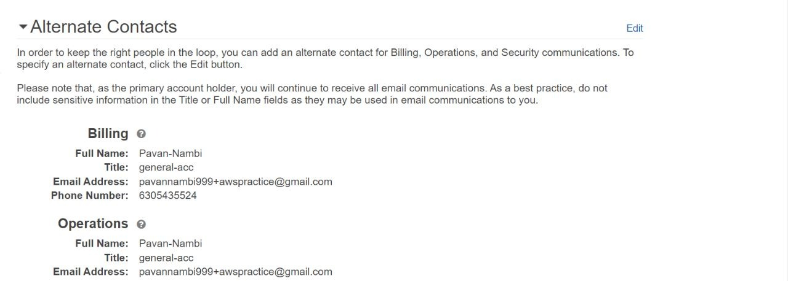
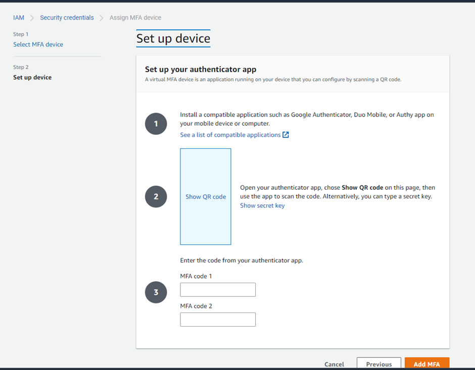
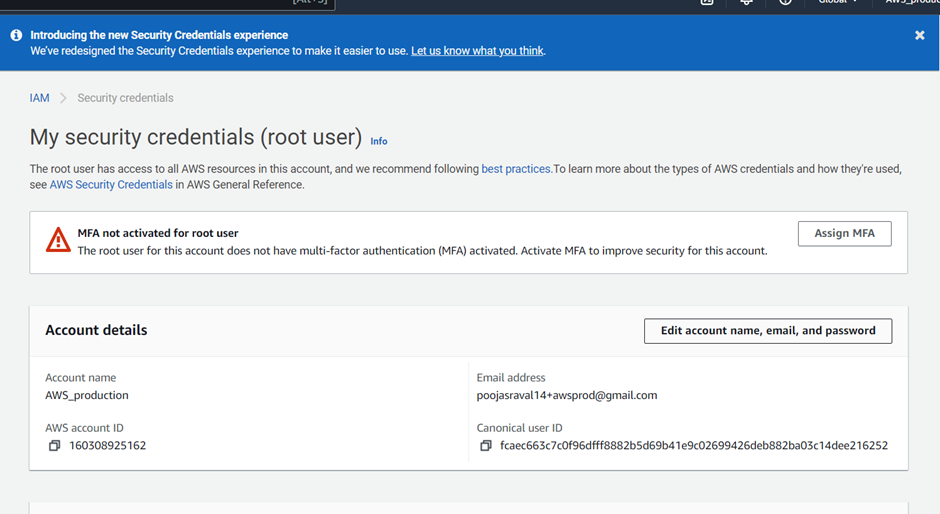
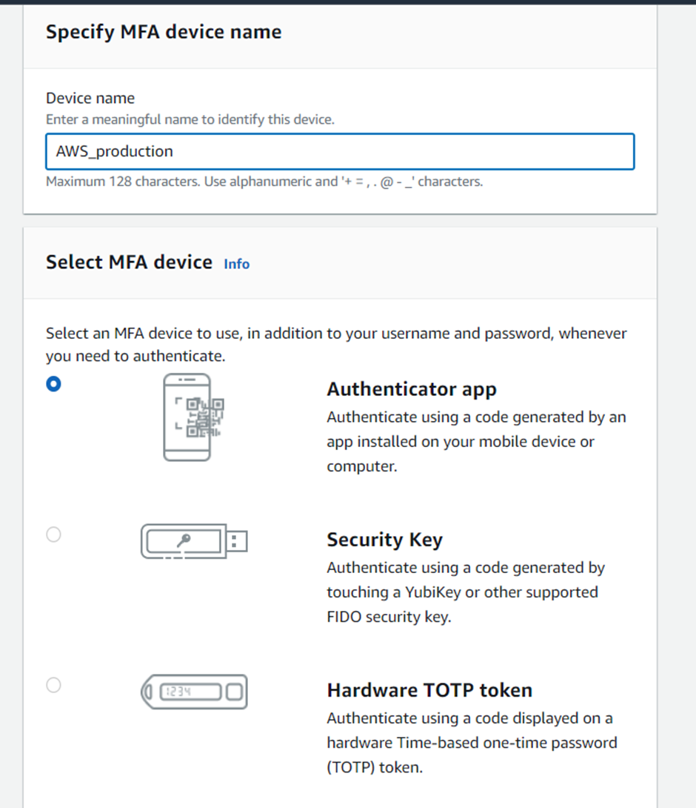
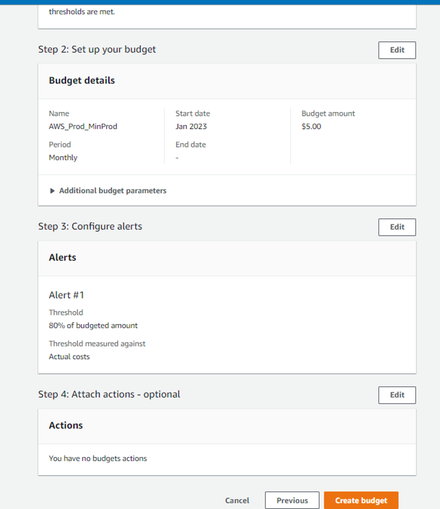

Notes Repository for AWS Solutions Architect
This repository was created by me and pooja as a resource for preparing for the AWS Solutions Architect certification using Adrian Cantril's course. (for revising concepts quickly)
Table of Contents
The notes are organized into the following sections:
- AWS accounts creation
- Cloud Computing
- AWS Fundamentals
- IAM accounts and AWS organisations
- Simple Service Storage
- Virtual Private Cloud basics
- EC2 basics
- Containers and ECS
- Advanced EC2
- Route 53 Global DNS
- Relational Database Service
- Network storage and data lifecycle
- HA and scaling
- Severless and Application Services
- Global Content Delivery and Optimisation
- Advanced VPC Networking
- Hybrid Environments and Migration
- Security,Deployment and Operations
- Infrastructure as Code
- NOSQL databases and dynamo db
- Machine learning101
- AWS local zones
Format
Each section is divided into sub-topics, and each sub-topic includes a brief summary of the key concepts, along with detailed notes and examples and screenshots if needed.
AWS Accounts Creation
Steps_for_AWS_Account_Creation
:pushpin: Creation Process
Click on the Create AWS Account.
Mention the Root User Email Address (use the acc_nm+…. @gmail.com trick to get a unique account under the same email id).
Give a unique AWS Account Name.
Verify the email
You will receive and email verification from Amazon.
Verify the Code send on your email.
Now give a strong password for the Root User Account and move to the next step.
Select the Plan for AWS Personal- for your own projects, provide your Full Name and Phone Number, Address, City State, Postal Code and agree the terms and conditions and move on next.
Now comes Billing Information enter all the billing details and click next.
If there are no errors in the Billing stage you will move on the next stage.
Confirm your Identity step enter number to verify yourself and enter the captcha.
Select the support Plan – Basic Support – Free plan and click Complete Sign up
Account get created successfully.
Click on AWS Management Console button.
Note: you can use same debit card/credit card info for as many accs as u want to make
Sign in Process
:pushpin: Sign In Process
-
Now Sign in to the previous created acc.
-
After Signing in make sure that the Location as N.Virginia East
-
Click on the Profile and in the drop-down select Account and find I AM User and Role
-
Access to Billing Information.
-
Go to Accounts and Edit Alternate Contacts and click on Update

-
On same page Click Edit and Activate IAM Access and click on Update.
-
Now in-order to activate MFA for this account. Go to Profile select Security credentials.
-
Now Click on Assign MFA 
-
Select an Authenticator App for authentication 
-
Scan the QR Code from the Authenticator and enter 2 MFA's back to back from the app into the text boxes and click on Add MFA. 
-
Go to accounts then Billing Dashboard initially you won see anything
-
Select Budget from the Sidebar and Create a Budget for your account. you can go with either zero based template one or customize below ss refers to customized version.  Here u have to click enable cost explorer and enable. It will say wait for 24 hr to get all data but u can just revisit this page and continue…
- After setting up the Budget Configure Alerts in there click on Add an Alert Thershold.
- An Alert Threshold
- Added Alter Threshold
- Review the Budget once and click on Create Budget.
- Successful creation of Budget.
- Select Billing Preference’s